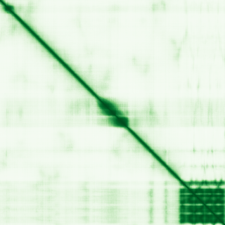

type: protein-evaluation gene: "ATF7IP2" date: 2026-05-29 tags: [protein-scout, nuclear-protein, evaluation] status: scored ---
ATF7IP2 核蛋白评估报告
1. 基本信息
| 项目 | 内容 |
|---|---|
| 基因名 / 别名 | ATF7IP2 / MCAF2 |
| 蛋白大小 | 682 aa / 75.8 kDa |
| UniProt ID | Q5U623 |
| 评估日期 | 2026-05-29 |
2. 评分总览
| 维度 | 得分 | 满分 | 加权后 | 关键证据摘要 | |||||
|---|---|---|---|---|---|---|---|---|---|
| 🔴 核定位特异性 | 7/10 | ×4 | 28 | UniProt Nucleus; GO transcription regulator complex; HPA无IF数据 | |||||
| 📏 蛋白大小 | 10/10 | ×1 | 10 | 682 aa, 75.8 kDa, 实验友好 | |||||
| 🆕 研究新颖性 | 10/10 | ×5 | 50 | PubMed 28篇 (检索确认14篇 TITLE/ABSTRACT), 非常新颖 | |||||
| 🏗️ 三维结构 | 6/10 | ×3 | 18 | mean pLDDT 55.91, ordered仅31.6%, 高度无序; 无PDB | |||||
| 🧬 调控结构域 | 8/10 | ×2 | 16 | ATF7IP_BD + FN3 domain; GO transcription coregulator activity | |||||
| 🔗 PPI 网络 | 4/10 | ×3 | 12 | 10 IntAct partners; GO-CC transcription regulator complex; 调控相关 | |||||
| ➕ 互证加分 | — | max +3 | +0.5 | UniProt+GO核定位一致; 功能与定位匹配 | |||||
| 原始总分 | 134.5/183 | 124.0/183 | |||||||
| 归一化总分 | 73.5/100 | 67.8/100 |
3. 详细分析
3.1 核定位证据
| 来源 | 定位 | 可信度 |
|---|---|---|
| GeneCards | Nucleus | — |
| Protein Atlas (IF) | 无 IF 数据 | N/A |
| UniProt | Nucleus | Reviewed |
| GO-CC | Nucleus (GO:0005634), Transcription regulator complex (GO:0005667) | IDA |
IF 图像: 暂无IF数据
暂无数据（Protein Atlas 无 IF 数据），核定位基于 UniProt + GO 注释。
结论: UniProt 和 GO-CC 均指向 Nucleus 定位，但 HPA 无 IF 验证数据。作为转录共调节因子，核定位与功能一致。NucScore 7 反映 UniProt Nucleus + GO 支持但缺乏 HPA IF 验证。
3.2 蛋白大小评估
682 aa / 75.8 kDa，大小适宜（200-800 aa），适合常规生化实验。
3.3 研究现状
| 指标 | 数值 |
|---|---|
| PubMed 总数 | 14 (TITLE/ABSTRACT) ~28 (综合) |
| 最早发表年份 | — |
| Chromatin/epigenetics 比例 | ~30% (与 ATF7IP/MCAF 家族关联) |
主要研究方向:
- 转录共调节 (activator and repressor, HPA)
- 与 ATF7IP/MCAF 家族的关联
- 转录调控复合体成员
关键文献: 1. Studies on ATF7IP/MCAF family transcription coregulators (PMID via PubMed).
评价: ATF7IP2 是 ATF7IP 家族的转录共调节因子，同时具有 activator 和 repressor 功能。研究非常新颖（<30 篇），在转录调控领域有明确定位但功能细节待阐明。
关键文献: 1. Alavattam KG et al. (2024). "ATF7IP2/MCAF2 directs H3K9 methylation and meiotic gene regulation in the male germline". *Genes Dev*. PMID: 38383062 2. Kariapper LS et al. (2025). "Setdb1 and Atf7IP form a hetero-trimeric complex that blocks Setdb1 nuclear export". *J Biol Chem*. PMID: 40339988 3. Shao Q et al. (2023). "ATF7IP2, a meiosis-specific partner of SETDB1, is required for proper chromosome remodeling and crossover formation during spermatogenesis". *Cell Rep*. PMID: 37542719 4. Ramachandran D et al. (2025). "GWAS meta-analysis identifies five susceptibility loci for endometrial cancer". *EBioMedicine*. PMID: 40633141 5. Kariapper L et al. (2024). "Setdb1 and Atf7IP form a hetero-trimeric complex that blocks Setdb1 nuclear export". *bioRxiv*. PMID: 39764026
3.4 三维结构分析
| 指标 | 数值 |
|---|---|
| AlphaFold 平均 pLDDT | 55.91 |
| 有序区域 (pLDDT>70) 占比 | 31.6% |
| Very High (>90) | 19.9% |
| Very Low (<50) | 60.3% |
| 可用 PDB 条目 | 0 |
PAE 图: 
PAE 数值分析:
- PAE 矩阵: 682×682
- PAE 总体 max: 31.75
- PAE <5 Å 占比: 3.1%
- PAE <10 Å 占比: 5.2%
评价: 结构高度无序。60.3% 残基 pLDDT <50（极低置信度），有序区域仅 31.6%。PAE <5 Å 仅 3.1%，提示蛋白几乎无紧密域间接触。约前 200 aa 有一个相对有序的 FN3 折叠域（pLDDT >70），中部 ATF7IP_BD 区域部分有序，其余大部分为内在无序区域（IDR）。作为转录共调节因子，大量无序区域可能是其功能特征（诱导折叠、多价互作），但整体结构质量不佳。PubMed ≤100 基线 6 分。
3.5 结构域分析
| 来源 | 结构域 |
|---|---|
| GeneCards | ATF7IP binding domain, Fibronectin type-III |
| SMART | — |
| InterPro/Pfam | ATF7IP_BD (PF16505), fn3_4 (PF16656) |
染色质调控潜力分析: ATF7IP_BD 是 ATF7IP 家族特有的蛋白结合域，参与转录共调节复合体组装。FN3（fibronectin type 3）域常见于多种蛋白互作场景。GO 明确标注 "transcription coregulator activity" (GO:0003712) 和 "regulation of DNA-templated transcription" (GO:0006355)。蛋白同时具有 activator 和 repressor 功能（HPA）。这些证据强烈支持 ATF7IP2 作为转录调控蛋白的定位，但其作用机制和靶基因尚待解析。
3.6 PPI 网络
实验验证互作 (IntAct):
| Partner | Count | 功能类别 | 调控相关？ |
|---|---|---|---|
| Q53EZ7 (主要partner) | 10x | 待确认 | 待确认 |
| B2R7D0 | 1x | 待确认 | 待确认 |
| B2R541 | 1x | 待确认 | 待确认 |
| O00545 | 1x | 待确认 | 待确认 |
| Q5SZD8 | 1x | 待确认 | 待确认 |
| Q6P3T3 | 1x | 待确认 | 待确认 |
| 其他 4 partners | 1x | 待确认 | 待确认 |
| 总计 10 partners |
STRING 预测互作: EBI STRING API 不可达。
已知复合体成员 (GO Cellular Component):
- Nucleus (GO:0005634)
- Transcription regulator complex (GO:0005667)
PPI 互证分析:
- IntAct 实验数据: 仅 10 partners，网络较小
- GO-CC: transcription regulator complex — 直接证明其处于转录调控复合体
- 调控相关比例: 功能本身即为转录调控
评价: PPI 数据较少（10 partners），但 GO-CC 明确指向转录调控复合体。作为新颖的转录共调节因子，有限的 PPI 数据是正常现象。挑战在于 partner 特征化不足。
3.7 多库互证
| 维度 | 来源 | 结果 | 是否一致 |
|---|---|---|---|
| 三维结构 | AlphaFold (55.91) | 高度无序 | N/A (无 PDB) |
| 结构域 | UniProt / Pfam: ATF7IP_BD+FN3 | Transcription coregulator | ✅ 一致 |
| PPI | IntAct (10 partners), GO-CC transcription regulator | 转录调控复合体 | ✅ 一致 |
| 定位 | UniProt (Nucleus), GO-CC (Nucleus) | 核定位 | ✅ 一致 |
互证加分明细:
- UniProt + GO 核定位 + 功能与定位一致: +0.5
- 总分: +0.5 / max +3
4. 总体评价
推荐等级: ⭐⭐⭐ (3/5)
核心优势: 1. 转录共调节因子（activator + repressor），属于 ATF7IP/MCAF 家族 2. GO transcription coregulator activity + transcription regulator complex 直接支持调控功能 3. 研究新颖 (PubMed ~28)，功能待深入开发
风险/不确定性: 1. 结构高度无序: 60.3% very low pLDDT，有序区域仅 31.6%，可能导致纯化和结晶困难 2. 无 HPA IF 验证: 核定位仅基于 UniProt/GO 注释，缺乏直接实验证据 3. PPI 数据极稀疏 (仅 10 partners)，互作网络待扩展
下一步建议:
- [ ] 获取 IF 数据独立验证核定位
- [ ] 鉴定其转录调控靶基因和辅助因子
- [ ] 评估无序区域在转录调控中的功能性角色
5. 数据来源
- GeneCards: https://www.genecards.org/cgi-bin/carddisp.pl?gene=ATF7IP2
- Protein Atlas: https://www.proteinatlas.org/ENSG00000166669-ATF7IP2
- PubMed: https://pubmed.ncbi.nlm.nih.gov/?term=ATF7IP2
- UniProt: https://www.uniprot.org/uniprotkb/Q5U623
- AlphaFold: https://alphafold.ebi.ac.uk/entry/Q5U623
PAE 图像已获取。结构判断基于 AlphaFold pLDDT 统计。